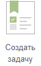

Сценарий работы инициатора задачи
Инициатор создает задачу и направляет ее исполнителю
Как создать карточку
Создать можно как новую карточку с пустыми полями, так и карточку
с уже заполненными полями используя шаблоны задач или скопировать
существующую карточку. Создать новую карточку:
- на главном экране системы 
- пункт меню «Задачи» – «Создать задачу»
- из списка задач «Создать» - «Новый»
- из списка шаблонов «Создать задачу»
- из другой карточки «Создать» - «На основании»
- используя плагины